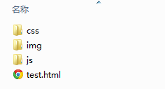

HTML中会有一些常用的静态资源，例如图片、CSS，Javascript等，这些资源通常都是定义在独立的文件（夹）中。
HTML中引用静态资源的标签是：
<script src="demo.js"></script> ——用于引用Javascript <link href="demo.css" rel="stylesheet"> ——用于引用CSS <img src="demo.jpg"> ——用于引用图片
静态资源的引用一般用相对路径，用法如下：
| 情景 | 目录结构 | 引用路径 | 说明 |
|---|---|---|---|
| 在同级目录 |
-index.html
-demo.jpg |
<img src="demo.jpg">
或者 <img src="./demo.jpg">
|
.表示当前目录 |
| 在子目录 |
-index.html
-imgs --demo.jpg |
<img src="imgs/demo.jpg"> |
|
| 在父目录 |
-demo.jpg
-pages --index.html |
<img src="../demo.jpg"> |
..表示上一级目录 |
一般来说，静态资源目录结构的最佳实践如下：
